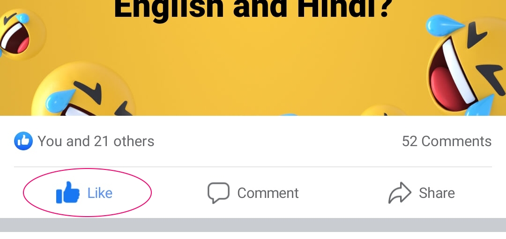

<ion-header translucent>
  <ion-toolbar>
    <ion-title>{{taskPlatfrom | titlecase}} | {{taskType | titlecase}}</ion-title>
    <ion-buttons slot="end">
      <ion-button (click)="dismissModal()">Close</ion-button>
    </ion-buttons>
  </ion-toolbar>
</ion-header>
<ion-content fullscreen class="ion-padding howToContentPanel">
  <ng-container *ngIf="taskPlatfrom == 'facebook'">
    <ion-text>
      <b>Go to facebook and then {{taskType}} the post (See below image)</b>
    </ion-text>
    
    
    
    <ion-text>
      <b>Get screenshot and upload on clicking the task again.</b>
    </ion-text>
  </ng-container>
</ion-content>